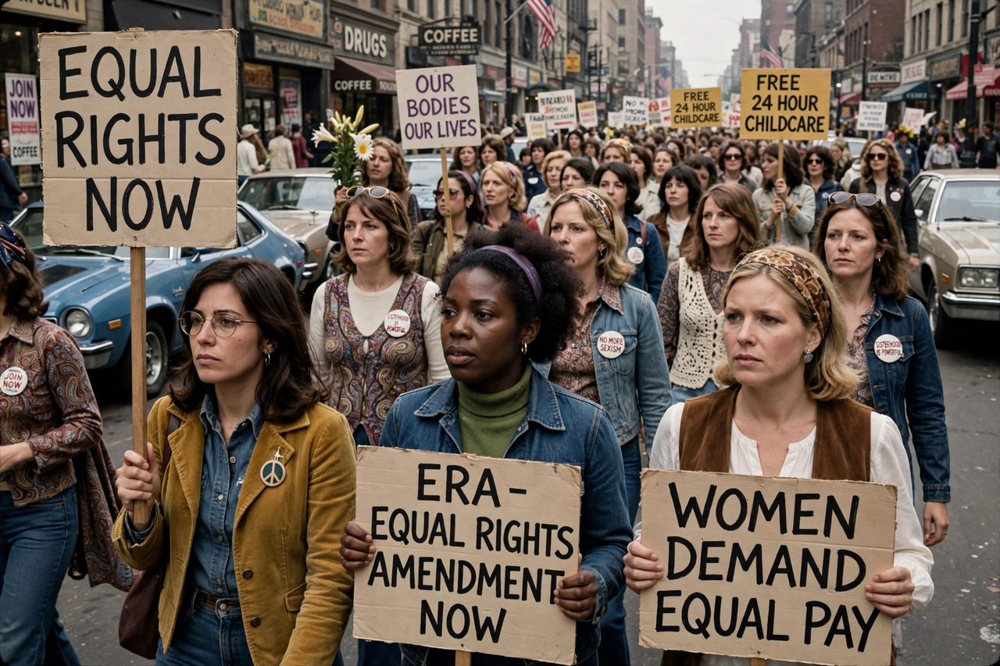

Second-wave feminism was a period of feminist activity and thought that began in the early 1960s in the United States and spread throughout the Western world and beyond. Whereas the earlier first-wave feminism had concentrated on legal rights such as women's suffrage, the second wave broadened the debate to sexuality, family, the workplace, reproductive rights, and de facto as well as de jure inequalities, under the slogan "the personal is political."
Betty Friedan's The Feminine Mystique (1963) is widely credited with sparking the wave in the United States by challenging the assumption that women found fulfilment solely through domestic life. In France, Simone de Beauvoir's The Second Sex (1949) had earlier provided a philosophical foundation. The National Organization for Women (NOW) was founded in 1966, and consciousness-raising groups and women's liberation organisations spread rapidly in the late 1960s.
Second-wave campaigns contributed to major legal and social changes, including equal-pay and sex-discrimination legislation, expanded access to contraception and abortion in many countries (for example Roe v. Wade in the US in 1973), the growth of women in higher education and the professions, rape crisis centres and refuges, and the campaign for the Equal Rights Amendment in the United States, which was not ultimately ratified. Title IX (1972) transformed women's athletics in American education.
The wave encompassed several currents — liberal, radical, socialist, and cultural feminism among them. Critics within the movement, notably Black and working-class feminists, argued that its agenda centred the experience of white middle-class women; these critiques helped shape the later framework of intersectionality. The wave model itself is debated by historians, who note continuities between the "waves."
Second-wave feminism is generally considered to have been succeeded by third-wave feminism in the 1990s, which placed greater emphasis on diversity and individual identity, while many second-wave goals — gender equality in pay, representation, and domestic labour — remain subjects of public debate.
See also: Feminism · First-wave feminism · Betty Friedan